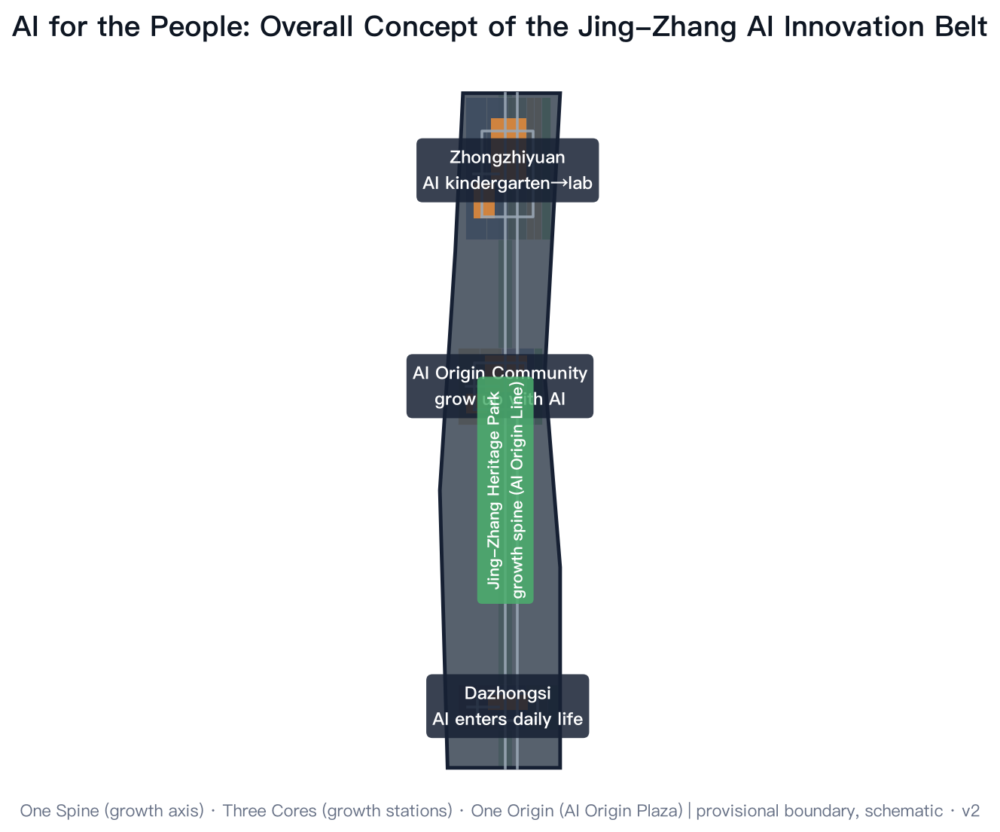

Zhongzhiyuan · 192.1 ha
AI kindergarten-to-lab: open-source laboratories, compute science museum, AI-native flagship school.
Offline digital exhibit. Authoritative data remain in GeoJSON, metrics.json, matrices and self-check; this page translates the overall concept, three key areas, land-use structure, metric system and key scenarios into a human-readable visual narrative.
provisional geometry: PASS intake only, replace with official polygons before formal professional scoring
The dual nature of AI: national infrastructure (compute clusters) and personal companions (agents) are translated along this century-old railway — from national energy to personal warmth.
Jing-Zhang's second answer: in 1909 Zhan Tianyou's herringbone railway proved "technology can be autonomous"; in 2026 this belt must prove "technology can serve the people".
Silicon companion: long-term memory + proactive service + deep participation. The AI-native first generation grows up directly in the new interface of "companion handles it, plain speech connects, auditable and accountable" — without PPT, App or approval baggage.

AI kindergarten-to-lab: open-source laboratories, compute science museum, AI-native flagship school.
AI growing-up community: AI Origin Plaza (where a child receives their first silicon companion), AI council pavilion network, companion stations.
AI living market: companion-direct consumption street, AI living market, smart native new-format incubation.
Conceptual suggestion: all spatial structures, metrics and projects are AI agent concept proposals; they do not replace professional planning or bypass governmental approval and statutory procedures. All materials come from public or cleared sources.